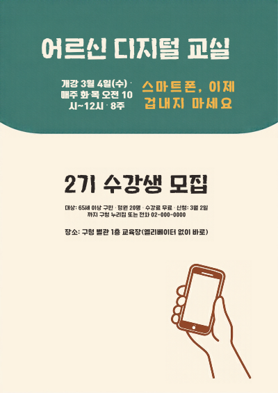
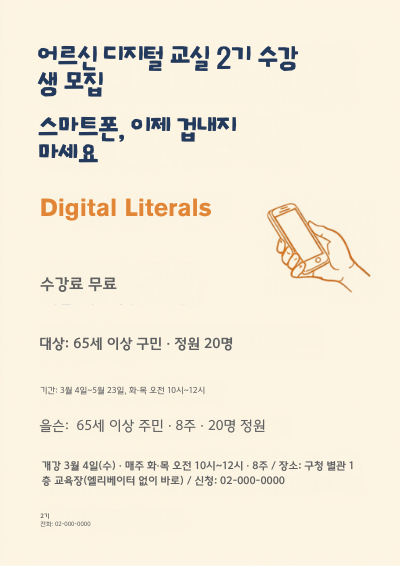
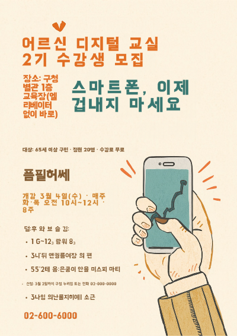

초급 · 번외편 1편 · 교실 2기를 알려라
포스터, 날짜가 바뀌었다
예쁜 시안 네 장 가운데 세 장에 없는 말이 들어 있었다
책의 QR이 가리키는 쪽: 시안 네 장 · 그림 AI 포스터 두 장 · 고친 포스터, 그리고 따라 만들기(맡기는 말만 복사)
이 장의 맡기는 말 — 복사해서 따라 하기
장면에서
AI에게 맡기는 말
구청 「어르신 디지털 교실」 2기 수강생 모집 포스터 그림을 만들어 주세요. 따뜻한 손그림 느낌. 어르신 두세 분이 스마트폰을 들고 웃는 장면. 큰 글씨로 "어르신 디지털 교실 2기 수강생 모집", "3월 4일 개강 · 매주 화·목 오전 10시", "구청 별관 1층 교육장 · 정원 20명 · 무료"를 넣어 주세요. 일흔 살 어르신이 2미터 떨어져서도 읽을 수 있게 글씨를 크게.
밑줄 친 말을 내 일의 말로 바꿔 쓰세요
결과물



그림과 영상 속 인물은 모두 AI로 만든 가상 인물입니다.
2편에서: 포스터가 붙었다. 과장님이 말한다. "교실 노래도 하나 있으면 좋겠는데."